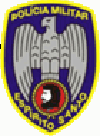

Vai até o dia 20 de janeiro de 2013 o período para se inscrever no concurso para a Polícia Militar do Espírito Santo. Com ingresso na patente de soldado, o salário é de R$ 2.421,76, e a taxa de inscrição é de R$ 60.
São no total 1.100 vagas colocadas no concurso para serem disputadas pelos candidatos. Para entrar para a PM do Espírito Santo, o concurseiro deve ter idade entre 18 e 28 anos, altura mínima de 1,60m para candidatos do sexo feminino, e 1,65 metros para homens. Além disso, é necessário que o candidato a militar tenha carteira de motorista categoria B.
Para fazer a inscrição no concurso para a PMES, é só acessar o site da organizadora, www.funcab.org, e preencher o formulário. Lá também voce pode baixar o edital do concurso. Não se esqueça de estudar pelas provas do concurso passado, faça o download. E boa sorte.